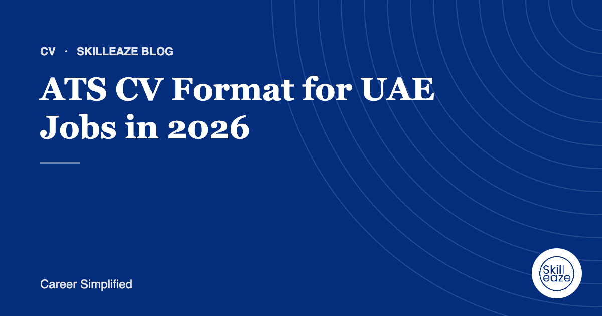

ATS CV Format for UAE Jobs in 2026
The layout, sections and personal details UAE recruiters expect, and how to keep your CV readable by applicant tracking systems.

The UAE is one of the most competitive job markets in the world. A single vacancy in Dubai or Abu Dhabi can attract hundreds of applications from dozens of countries, and most of them are first read by software, not people. This guide walks through the exact structure we use for UAE CVs, section by section, so yours is easy for both an applicant tracking system and a busy recruiter to read.
- Easy to reach in one glance
- The first filter many UAE recruiters apply
- Your target role in plain words
- The heart of the CV: impact, not duties
- Searchable keywords, grouped
- Degrees, dates and recognised certifications
Start with the details UAE recruiters check first
Unlike many Western markets, UAE employers often screen for practical eligibility before skills. Put a short line under your name with your nationality, current location, visa status (for example, employment visa, visit visa or own visa), notice period and, where relevant, a UAE driving licence. Add your phone with country code, a professional email and your LinkedIn URL.
This saves the recruiter a step. If they have to hunt for whether you can join within 30 days, they may simply move to the next CV.
Use a single-column, text-based layout
Applicant tracking systems read top to bottom, left to right. Two-column designs, text boxes, tables, icons and skill bars can scramble the order or hide information entirely. Keep it to one column with clear section headings.
- One column, standard fonts
- Headings: Profile, Experience, Skills, Education
- Plain bullet points
- Consistent dates (Mar 2022 – Present)
- Two-column templates
- Text inside images or text boxes
- Skill bars and star ratings
- Contact details in the header or footer only
Write a profile that names your target role
Your profile is the first block of text a recruiter reads, usually for a few seconds. Make it specific: your job title, years of experience, sector and two or three strengths that match the roles you want. Skip generic phrases like "hard-working team player" and "seeking a challenging role".
Procurement Specialist with 7 years in construction and facilities across the UAE. Strong in supplier negotiation, SAP and cost control on projects up to AED 120M.
Lead every role with results
For each job, add three to six bullets. Start each with a strong verb, show the scope (team, budget, region) and end with the outcome. If you have GCC experience, make it obvious, because many UAE employers value regional familiarity with clients, regulations and working culture.
Responsible for managing suppliers.
Managed 40+ suppliers across Dubai and Abu Dhabi, renegotiating contracts to reduce material costs on three active projects.
Match keywords to the job, honestly
Recruiters search their system for job titles, tools and certifications. Read three or four job adverts for your target role and note the terms that repeat: software, licences, methodologies. Where they truthfully describe your experience, use the same wording in your profile, skills and bullets. Never add skills you cannot discuss in an interview.
Keep it to two pages, and save it correctly
Most UAE recruiters prefer one to two pages. Cut older or less relevant roles to a single line. A professional photo is common in the UAE but optional; if you use one, keep it simple and business-appropriate. Save as PDF unless the portal asks for Word, and name the file clearly, for example Firstname-Lastname-Procurement-Specialist.pdf.
Final thought
A UAE-ready CV is not about clever design. It is about making the right information easy to find in seconds, for both software and people. If you have applied widely with few responses, the structure and targeting are usually the first things to fix.
Frequently asked questions
Should I put a photo on my CV for UAE jobs?
A photo is common in the UAE and many recruiters expect one, but it is not mandatory. If you add it, use a recent, neutral, professional headshot. Keep it small and at the top so it does not push your experience down. If a job advert asks for no photo, follow the advert.
What file format is best for UAE applications?
A text-based PDF is safest for most portals and email applications because the layout stays fixed. Some employer systems prefer Word, so keep an editable DOCX version ready. Never send a scanned image of your CV, because applicant tracking systems cannot read the text inside it.
Do I need to mention my visa status?
Yes, it helps. UAE recruiters often filter by availability, so a short line such as visit visa, employment visa or own visa, together with your notice period, saves them a call. Keep it factual and update it whenever your status changes.
General guidance only. Employer requirements vary; always follow the job advert.
 Chat on WhatsApp
Chat on WhatsApp